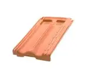

Telha francesa de cerâmica 39,5x23,9cm Faulin
Preço: R$ 2,79
Descrição do produtoTelha francesa de cerâmica 39,5x23,9cm Faulin, fácil de instalar, além de possuir bom rendimento.
Preço: R$ 2,79
Descrição do produtoTelha francesa de cerâmica 39,5x23,9cm Faulin, fácil de instalar, além de possuir bom rendimento.
Mais características: